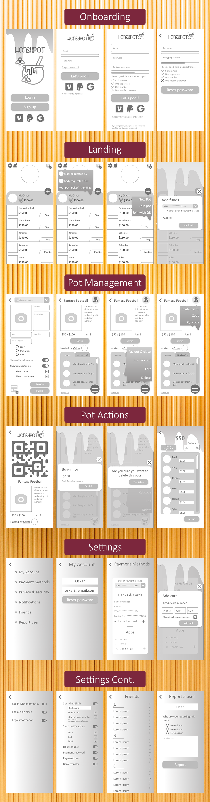
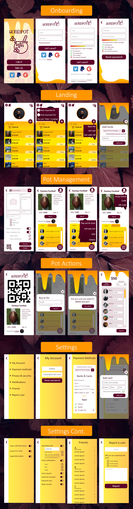

HoneyPot
- Prompt: Design a mobile app that solves a real need in a person’s day-to-day life.
- Main role: Project Manager
- Secondary roles: User researcher, UX Designer, UI designer, Prototyper
- Timeframe: 3 weeks
- Platform: Mobile
- Team size: 3
- Tools and software:
The Problem:
You don’t carry cash, but you have to pay some money to the swear jar, or the betting pool, or whatever money pool. If only you could do this digitally.
The Solution:
An app that acts as a digital money pool that users can pay into, after some set time, or whenever the owner of the pool decides, the money is paid out.

- Conducted user research through interviews and survey and synthesized information.
- Designed the user experience of the website.
- Designed the user interface of the website with feedback from users.
- Prototyped and iterated on designs in Adobe XD.
Main Responsibilities:
Research Phase
User interviews and survey
In the beginning we could see many different uses for a money pooling service, however the user interviews helped direct our efforts, we realized that users generally only pool money for a specific reason, the longest lasting being for betting, typically on sports like fantasy football. Our survey corroborated this. In order to not stretch ourselves too thin in the original design, we focused in on designing for this situation.

User personas
We grouped the responses from our interviews in a venn diagram to better understand how users liked to interact with money and betting, we then developed a user persona, Oskar, to reflect the fantasy football angle, we also developed user insight and problem statements for him which told us that the most important thing for him was efficiency, a "set it and forget it" style of use.

Definition Phase
Feature prioritization
During brainstorming we explored many ideas for app features that we then arranged in a feature prioritization matrix. We decided to focus on features that would directly relate to our user persona, so our ideas for charity funds and the like were placed on the backburner.

User insight and problem statements
...

Ideation Phase
User journey map
We laid out a user scenario that we translated into a storyboard, but the real insight on Oskar came from the journey map. We realized that while we could probably get one person to use the app, it could be difficult to get an entire party on-board, especially if the onboarding process was needlessly complicated, we brainstormed some ideas for how we might streamline onboarding, especially in the case of an invite from an existing user. We also realized users might not want to deal with the hassle of setting up banking information, and wanted to allow users to connect their accounts to other money handling apps like Venmo or Paypal to increase ease of use.

Competitor analysis
Our competitor analysis was surprising, we had gone into the project almost positive that most apps doing money pooling were small and not well designed: lo and behold, we found that PayPal offers money pooling! Seeing how PayPal handled money pooling on a technical level was helpful for understanding what pieces of information would be necessary (or even just nice) for setting up a pool. However, almost all other apps we looked at were small as we expected, and none seemed to fill the niche we were designing for, and many were complicated to use.

Prototyping Phase
Paper prototype
To direct our design we created a user flow, then we sketched out some paper prototypes given what we had learned from the competitor apps and guided by our user flow.

Digital protoype
Afterwards, we combined our favorite designs in a low-fidelity digital prototype.
Testing Phase
Iteration 2
There was one major issue that presented itself during our user tests: no one on the design team participated in fantasy football. Thankfully, our first user immediately pointed out that the way we had designed the payout function would not be practical and suggested that we change it to be based on a percentage instead. We immediately pivoted our subsequent tests to avoid the payout function as we knew it to be broken. Users also had some trouble with readability due to iconography and IA, which we updated in our final design.
Results
Reflection
Thanks to the user testing, we were able to update our design to increase readability and practical use. If I were to revist the design I might consider leaning even more into the aesthetic of fantasy football, especially in the UI design, I also think that the base functionality needs a closer look with fantasy football participants to ensure it is logical.
Future opportunities include: pot themes, host request payment, host reassignment, friend "groups", public pots, lock the pot, pot chat/comments, mini-games, statistics
Major take aways from this project: payouts are generally based off of a percentage of what the user paid into the pot originally, users get confused if the logo is used in place of clearer icons